A few weeks ago, I found myself having to do a thing over and over again in my browser. It was cumbersome.
And so, it was time for me to reduce this pain by making 1 a browser extension.
However, the last browser extension I wrote was in 2013 2. (It was a web habits tracker.) Here in 2025, I had no idea what browser extension development was like.
This is what extension development was like back then, at least for Chrome. How different is it now?
Not that different, actually! That’s amazingly stable for a software platform. Those of you that just wanted to know that can close the tab now.
But if you need to re-learn how extension development works, like I did, here is how my 2025 Firefox extension 3 was put together.
Contents
I. The problem (why I need the extension)
I use note-sender to post to my weblogs. Here’s what note-sender looks like.
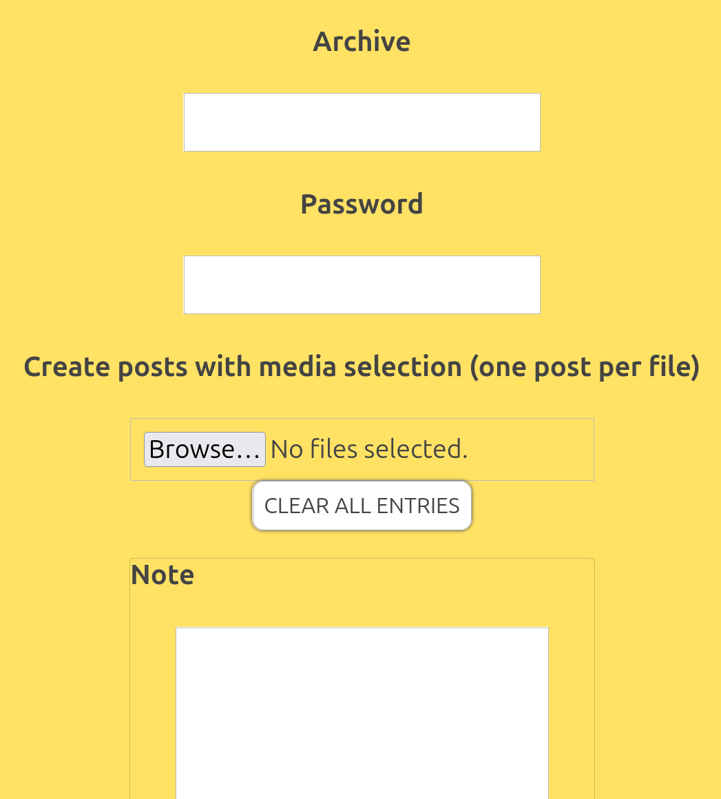
note-sender posts to note-taker 4 which handles the actual updating of the weblogs. It is an API that is the ultimate destination for the content that the extension captures from the web page.
Five years ago or so, my picture-posting process usually went like this:
- I took a picture on my phone.
- I immediately opened note-sender (also on my phone).
- In note-sender, I:
- Uploaded a photo or video
- Wrote a note about it
- Posted it
For whatever reason, the process evolved into:
- Take picture on my phone.
- Put away my phone and forget I took the photo.
- Let hours or days pass.
- Let my phone auto-upload all of my photos to Flickr in the background.
- Look at Flickr on my computer and notice the picture; realize that I’d like to post it to a blog.
- Either:
- Get my phone out
- Open note-sender
- Hit the media browse button
- Scroll through the many pictures taken since that particular photo was taken to find the photo (I often gave up at this step)
- Write some text and post
- Or:
- Stay on the Flickr page on my computer
- Click on the download button
- Select a size
- Confirm that it is OK to the download to the computer
- Open note-sender
- Hit the media browse button
- Find the photo file in the file system
- Write some text and post
In a sense, the extension doesn’t actually save me that much work. It lets me skip:
- Downloading a photo
- Leaving the page I’m on to go to another page (note-sender)
- Searching the Photo Roll or file system for a photo
Does that really matter?
Actually, yes. That’s enough friction to make me skip posting. Especially if it’s the second or third time I’m posting during the photo browsing session. Sad but real!
What my extension needed to do to fix this
From a Flickr photo page (example), the extension needed to enable me to:
- Click on a button (without leaving the Flickr page)
- Write some text in a box
- Select a saved login
- Hit a button to post to a weblog
II. How the extension is made
The source
In case you just want the source, here it is.
Extension anatomy
Just like eleven years ago, the extension has a manifest. There is a version 3 format, but if, like me, you don’t want to bother with learning version 3, you can still use version 2, at least in Firefox. The manifest describes what scripts are in the extension, where they are, and what resources they need.
Here is mine, annotated.
{
"manifest_version": 2,
"name": "Flickr to note-taker",
"description": "Posts images from the Flickr page you're on to note-taker",
"version": "1.0.0",
The permissions state what the extension needs to touch and where they need to act.
"permissions": [
"tabs",
"https://*.flickr.com/*",
"https://*.staticflickr.com/*"
],
The page_action object below says that when the browser is at a url starting with https://flickr.com/photos/, it should show an icon in the URL bar that has the tooltip “Send to notes”. When that button is clicked, a web page defined in form.html should show up in a popup.
"page_action": {
"default_icon": {
"19": "flickr-to-note-taker_icon_19.png",
"38": "flickr-to-note-taker_icon_38.png"
},
"default_title": "Send to notes",
"default_popup": "form.html",
"show_matches": ["https://flickr.com/photos/*"]
},
This content_scripts object tells the browser what script to run in the context of pages starting https://flickr.com/photos/.
"content_scripts": [
{
"matches": ["https://flickr.com/photos/*"],
"js": ["get-photo-download.js"]
}
],
These are the icons the browser should display in various contexts, like the url bar button.
"icons": {
"16": "flickr-to-note-taker_icon_16.png",
"48": "flickr-to-note-taker_icon_48.png",
"128": "flickr-to-note-taker_icon_128.png"
},
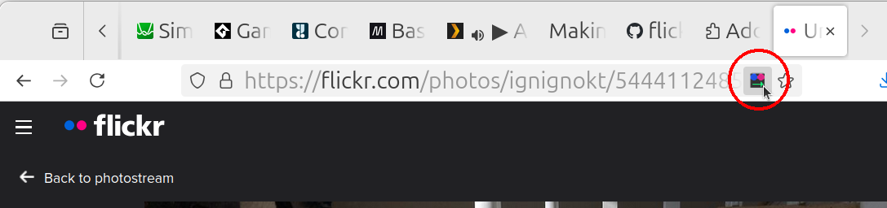
The id in browser_specific_settings needs to be unique if you want to sign it, which we’ll talk about later.
"browser_specific_settings": {
"gecko": {
"id": "flickr-to-note-taker@smidgeo.com"
}
}
}
UI
Now that we have toured the parts of the extension, let’s look more closely at the UI part.
When the user clicks the popup button in the url bar, form.html is diplayed. Here is what that looks like.
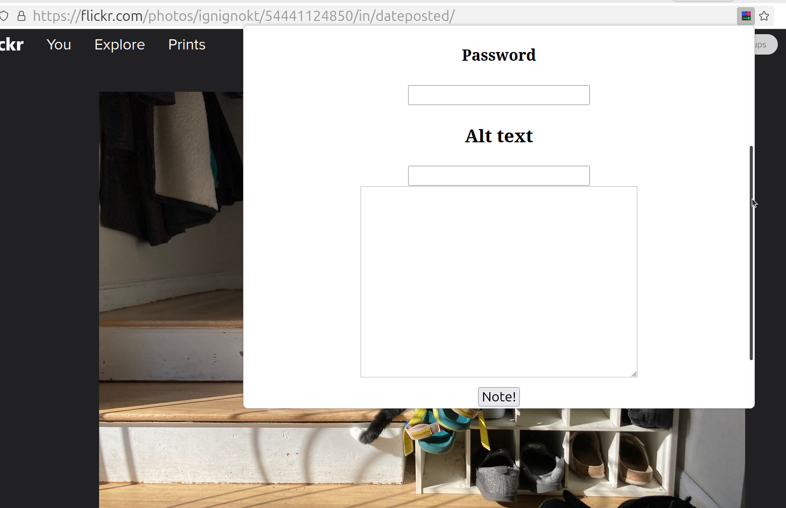
And this is the code for form.html.
<html>
<head>
<title>Note Sender, Jr.</title>
<link rel="stylesheet" type="text/css" href="app.css"></link>
</head>
<body>
<h2>Status</h2>
<div id="status"></div>
<section class="global-props ccol">
<h4>Archive</h4>
<input type="text" id="archive" value="" />
<h4>Password</h4>
<input type="password" id="password" value="" />
<h3>Alt text</h3>
<input class="alt-text" type="text" />
<textarea class="note-area" data-of="caption"></textarea>
<button class="submit-note-button">Note!</button>
</section>
(FYI: For the purposes of managed passwords, the url of this form is <span id="popup-url"></span>.)
<script src="form.js"></script>
</body>
</html>
The event handler for clicking on the Note! button in form.js takes stuff from the inputs and posts it to an API endpoint. If you are familiar with web apps, you’ve seen this kind of thing over and over. But there are a couple of functions that are specific to extensions in that file that we should look at.
sendMessageToDownloader runs as soon as the page loads. It looks for the active browser tab that has the Flickr photo page loaded, and sends it a message to the content script telling it to start downloading the media.
async function sendMessageToDownloader() {
try {
var activeTabs = await browser.tabs.query({ active: true, url: 'https://flickr.com/photos/*' });
var tab = activeTabs?.[0];
if (!tab) {
throw new Error('Could not find the Flickr tab.');
}
await browser.tabs.sendMessage(tab.id, { command: 'start' });
} catch (error) {
console.error(error);
statusEl.textContent = error.message + ' tab ' + tab.id;
}
}
form.js has another event handler, onMessage, which we register with browser.runtime.onMessage.addListener(onMessage). It will receive the reply from the content script in onMessage and will save binary form that message as well as some metadata for later use by the onSubmitClick handler.
function onMessage({ mediaBuffer, type, filename }) {
buffer = mediaBuffer;
mediaType = type;
mediaFilename = filename;
statusEl.textContent = 'Media with length ' + buffer.byteLength + ' and type ' + mediaType + ' is ready to post.';
}
document.getElementById('popup-url').textContent = window.location.href;
Extension popups have a weird url of the form
moz-extension://[uuid] and aren’t exposed to the user. The reason the user might want to know that url is so they can associate passwords with that url in Firefox’s password manager. Once they’ve saved passwords for the extension url, they can easily fill in the password by right-clicking on the password field and selecting “Use saved password.” I personally use pass for “important” passwords, but I use Firefox’s password manager for blog passwords.Page work: Simulating the user
The code that gets the photo or video binary and gets it to form.js is in content script, get-photo-download.js.
It is mostly DOM querying and timeouts, the kind of code you tend to see in programs like end-to-end tests that mimic a person clicking on a sequence of things in a web page.
get-photo-download.js clicks on this button (circled in red) —
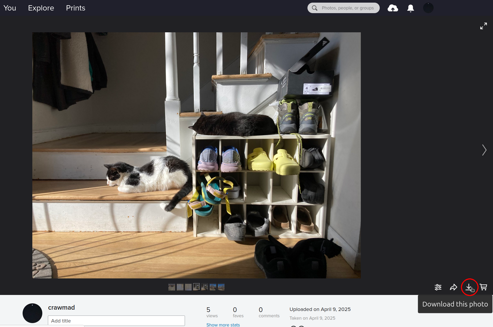
— in order to make this menu appear:
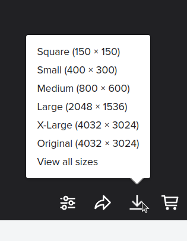
Once it finds the menu items, it grabs the href value of the Large size link and fetches the image from that URL. Then, it passes the ArrayBuffer containing the image to the listener in form.js via a browser.runtime.sendMessage.
Instead of getting the media binary from a download link like we do in the photo case, we grab the video file from the
<video> player element’s src attribute because the version Flickr puts there will be widely playable. I know it plays in Firefox on Ubuntu and on Mobile Safari, at least.Workflow completion in the UI
Back in form.js, the message is received, and the media ArrayBuffer is saved to the module closure. Whenever the user clicks the “Note!” button, that ArrayBuffer is packed into the form data for a POST to the note-taker endpoint. Other than status updates about how that POST went, the extension’s work is done.
Informal sequence diagram
In short, the action in the extension flows like this (start following from “init”):
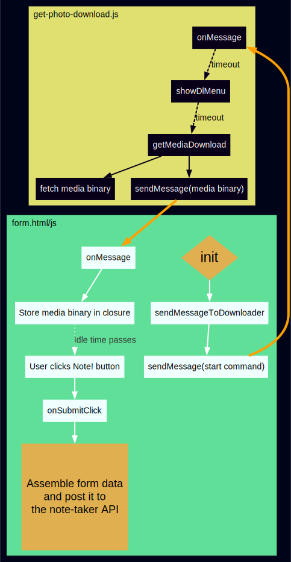
III. Packaging
Extension files are just zip files, even though they have an .xpi extension. There’s a couple of other considerations, though.
Development
While you are developing your extension, you can load it without having to zip it by going to about:debugging#/runtime/this-firefox, clicking “Load Temporary Add-on…”, and pointing the file dialog to the directory where you extension files are.
Signing
Because this extension is just for myself, I wanted to just load it unpacked and be done. But unpacked debug extensions do not persist after you close and reopen the browser, so I needed to zip and sign the extension.
When zipping, make sure the zip structure is flat — no subdirectories.
Signing an extension, while nowhere near nightmarish as signing an iOS app, is still a hassle. You can read about it here.
Here’s a couple of things that tripped me up about it:
- The docs are ambiguous about how long you have to wait after you submit the zip file for approval. (Approval for signing, not for public consumption.) Mine was approved in five minutes by an automated process.
- The approval email will say that it is available at a url of the form
https://addons.mozilla.org/developers/addon/<some numbers>/versions. This is probably a me thing, but I had trouble finding the actual extension file.
Click on an item in the version history. On the version page, there will be a small Files section with the link to the xpi file. (The xpi file is just the zip file with a different extension.)
Installation
Once you have that file, install it by going to about:addons, clicking the gear icon, selecting “Install Add-on From File”, and selecting the zip file.
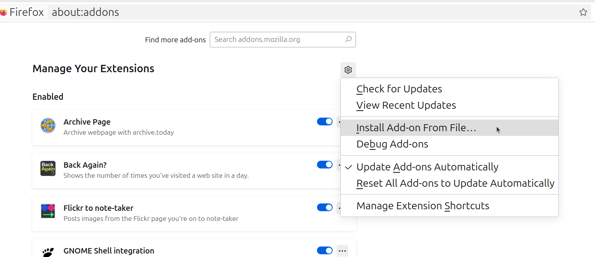
You can go a step further and make it available to other people by submitting it to the Add-Ons Developer Hub, but that’s a whole thing that requires you to create a Firefox account and set up 2FA, etc.
All together now
Once the extension is installed, here’s how it works.
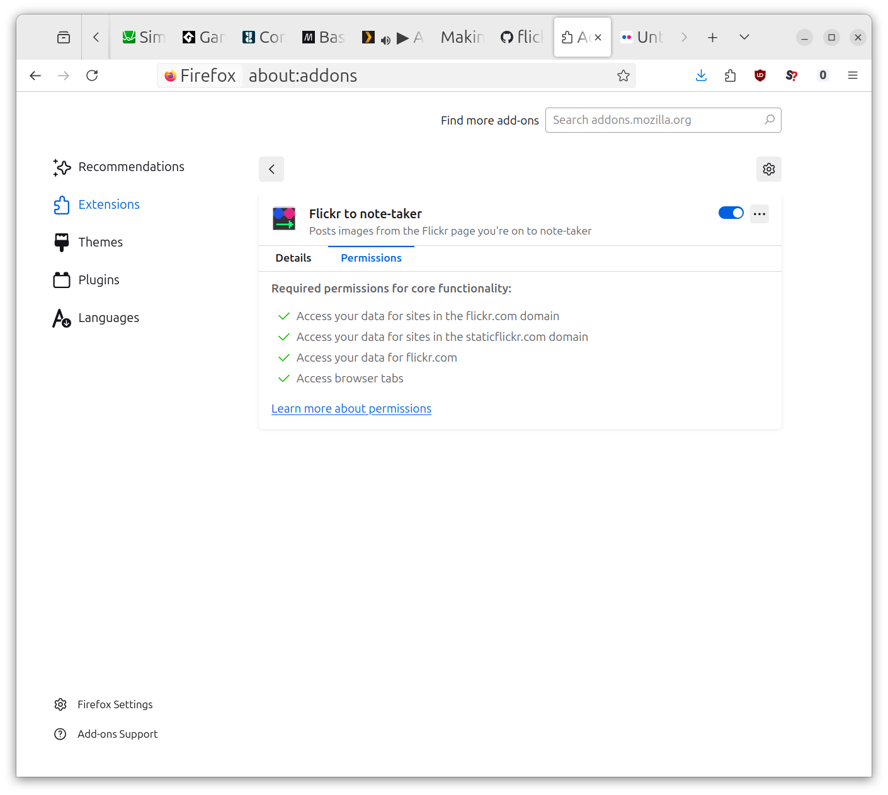 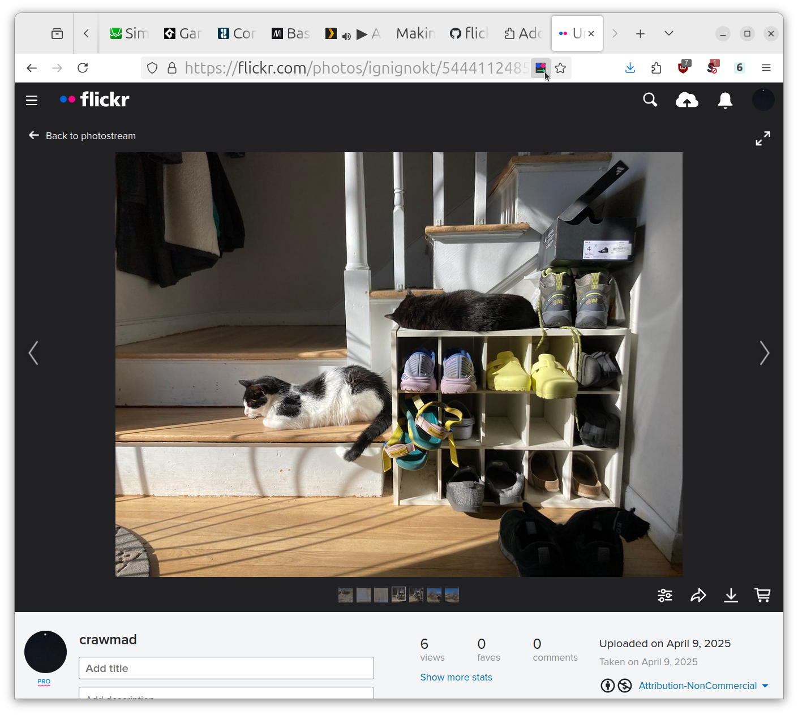 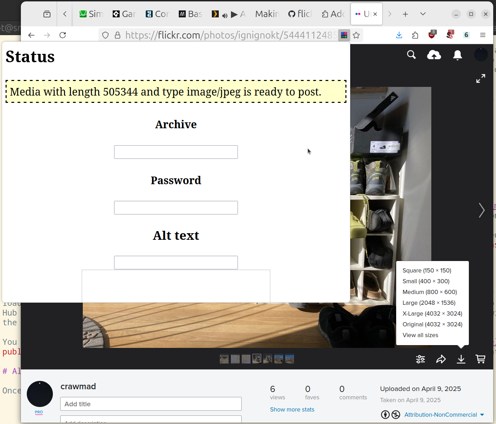 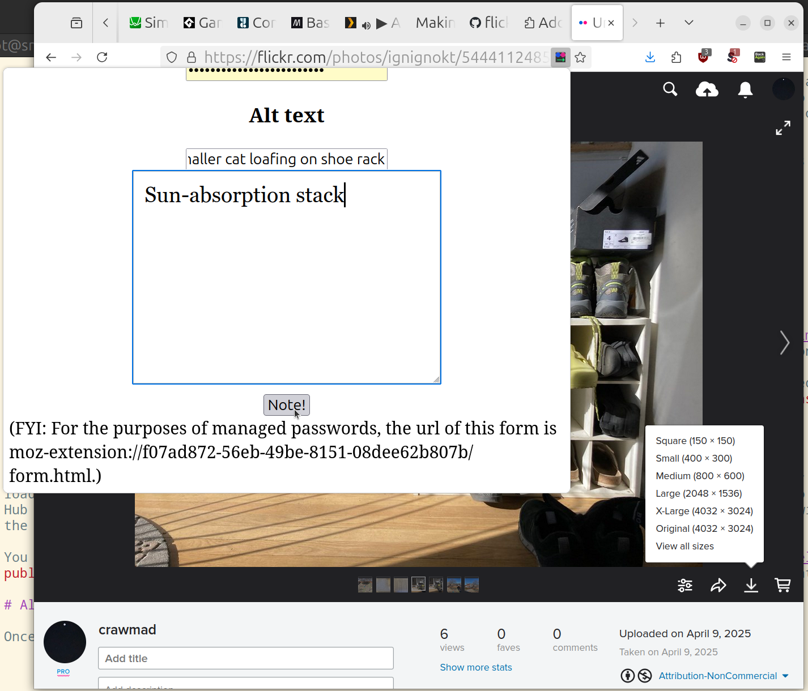 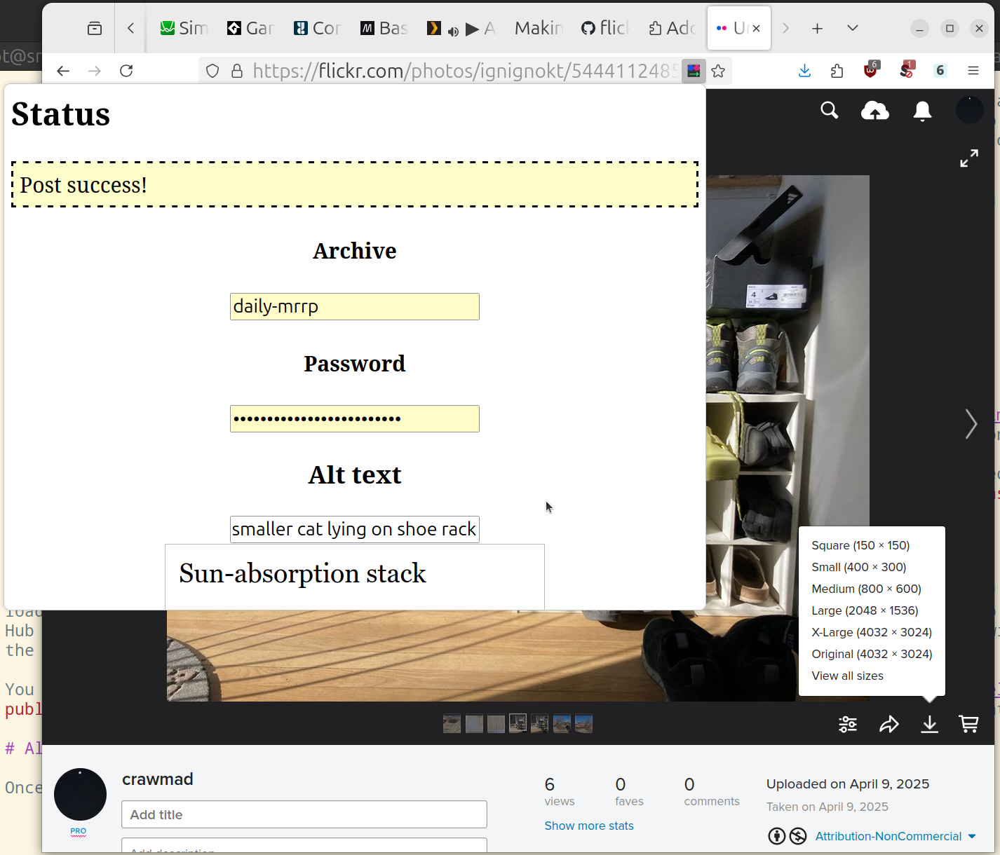 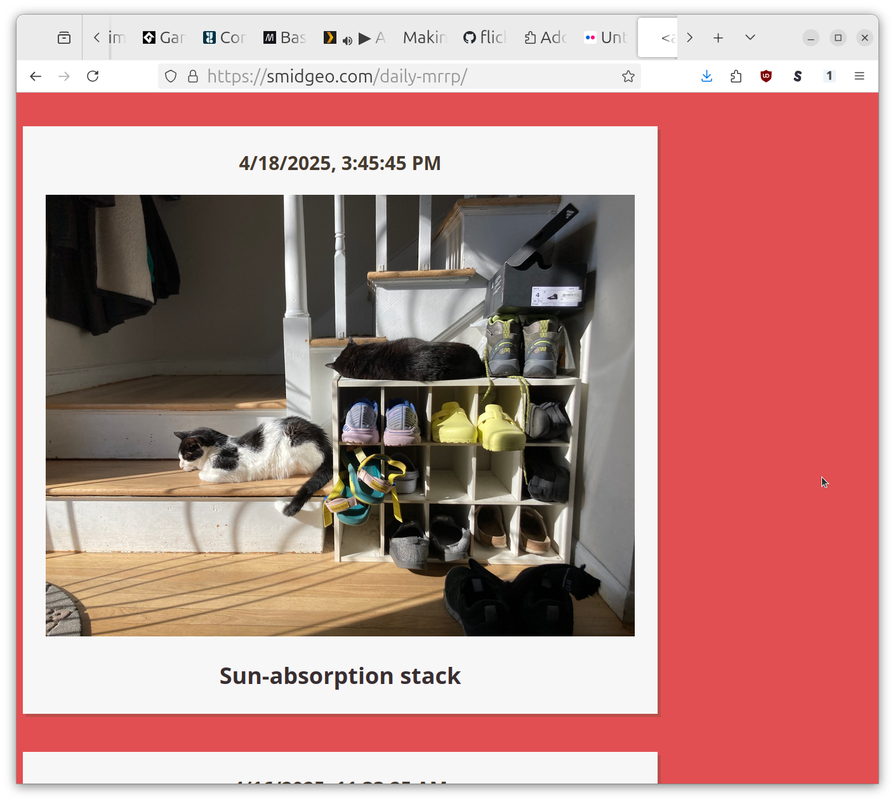
Here is a video of the extension in action.
It’s saved me a lot of time and allowed me to make posts I otherwise would not have bothered with. If there’s some cumbersome web doings in your life, consider making something like this yourself!*
Most static site generators require you to run a build on your laptop after you write something and then upload the built site to your web server. note-taker runs 24/7 on a server to receive posts so that I can post to it from my phone. I do not have to be at my laptop to rebuild and upload a site.